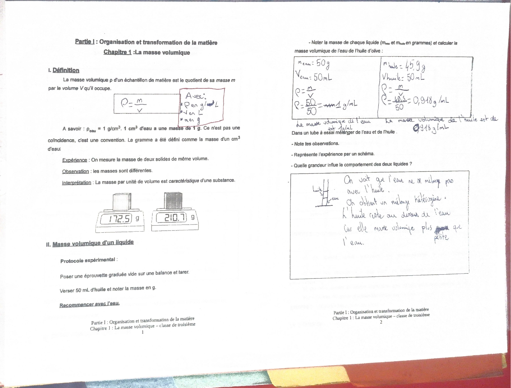
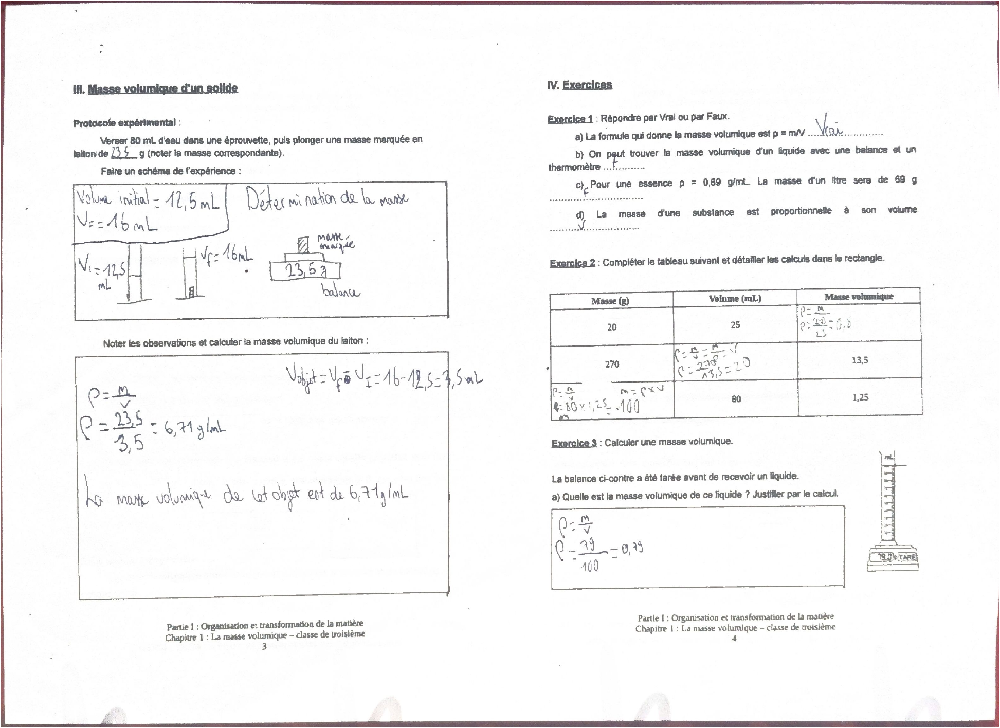
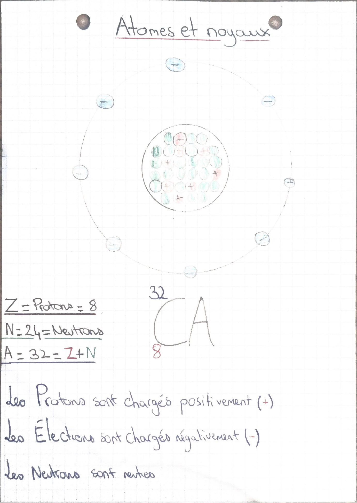
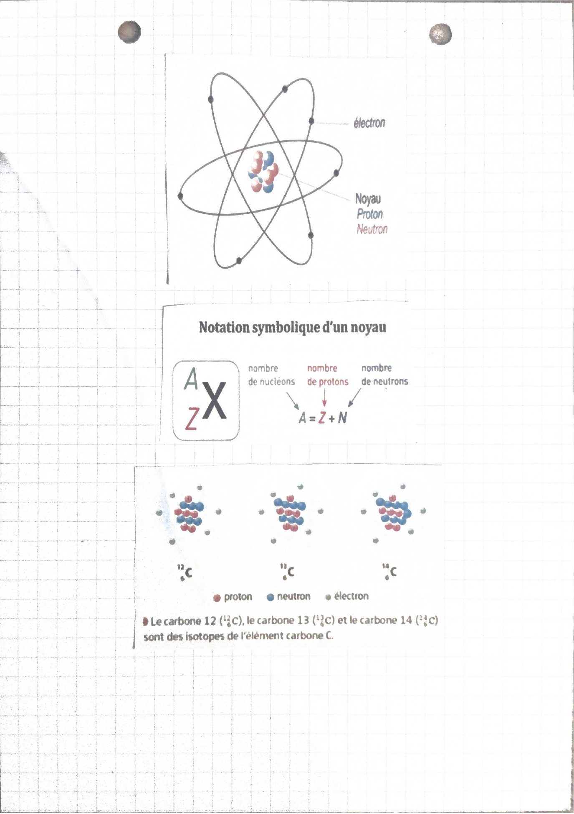

Deux chapitres sont dans les scans : la masse volumique, puis l’atome.
La lecture complète reprend les expériences et les calculs du cahier. La synthèse garde les formules et les résultats.
L’extra va plus loin que le cahier, sur les mêmes notions.
Chapitre 1 — La masse volumique
ρ = m / V. Masse en g, volume en mL, masse volumique en g/mL. Pour l’eau, 1 g/mL : c’est une convention, le gramme a été défini comme la masse d’un centimètre cube d’eau.
50 g pour 50 mL. ρ = 50 / 50 = 1 g/mL.
45,9 g pour 50 mL. ρ = 45,9 / 50 = 0,918 g/mL.
L’eau et l’huile ne se mélangent pas. L’huile reste au-dessus, parce que sa masse volumique est plus petite.
La matière est faite d’atomes. Des atomes liés ensemble forment une molécule.
Un atome : un noyau, et des électrons qui gravitent autour. Entre les deux, du vide. Structure lacunaire.
Dans le noyau : protons, charge +, et neutrons, sans charge. Les électrons ont une charge −.
Un atome est électriquement neutre : autant de protons que d’électrons.
Z est le numéro atomique, le nombre de protons. A est le nombre de masse, protons + neutrons. N = A − Z.
Exemple du cahier, le cuivre : 6329Cu. Z = 29, A = 63, donc N = 34 neutrons.
Les isotopes d’un élément ont le même Z et un A différent. Carbone 12, 13 et 14 sont des isotopes du carbone.
Chapitre 1 · définition
La masse volumique
La masse volumique ρ d’un échantillon est le quotient de sa masse m par le volume V qu’il occupe.
ρ = m / V, avec ρ en g/mL, m en g, V en mL.
À savoir : ρeau = 1 g/cm³. Un centimètre cube d’eau a une masse de 1 g. Ce n’est pas une coïncidence, c’est une convention.
Expérience du cours : on mesure la masse de deux solides de même volume. Les masses sont différentes. Interprétation : la masse par unité de volume est caractéristique d’une substance. Sur le document, les balances affichent 172,5 g et 210,7 g.
Chapitre 1 · liquides
Eau et huile
Protocole : poser une éprouvette graduée vide sur la balance et tarer. Verser 50 mL d’huile, noter la masse. Recommencer avec l’eau.
1 g/mLeau, 50 g / 50 mL
0,918 g/mLhuile, 45,9 g / 50 mL
huile au-dessusmélange hétérogène
Observation de Ruben : l’eau ne se mélange pas avec l’huile. On obtient un mélange hétérogène. L’huile reste au-dessus de l’eau car sa masse volumique est plus petite.
La grandeur qui explique ce comportement est la masse volumique.

Pages 1 et 2 de la fiche, avec les calculs et le schéma du tube à essai.Chapitre 1 · solide
Le laiton
Protocole : verser 80 mL d’eau dans l’éprouvette, plonger une masse marquée en laiton de 23,5 g.
Sur le schéma du cahier, le volume passe de 12,5 mL à 16 mL. Volume de l’objet : V = 16 − 12,5 = 3,5 mL.
ρ = 23,5 / 3,5 = 6,71 g/mL. La masse volumique de cet objet est 6,71 g/mL.

Déplacement d’eau pour le laiton, puis le tableau d’exercices déjà calculé.
Calculs déjà faits sur la fiche
20 g et 25 mL : ρ = 20 / 25 = 0,8 g/mL.
270 g et ρ = 13,5 g/mL : V = 270 / 13,5 = 20 mL.
80 mL et ρ = 1,25 g/mL : m = 1,25 × 80 = 100 g.
Éprouvette : 79 g pour 100 mL, ρ = 79 / 100 = 0,79 g/mL.
Pour une essence à 0,80 g/mL, un litre fait 0,80 × 1000 = 800 g, pas 80 g.
Trois exercices de la feuille ne sont pas encore remplis : les canettes, le pont, l’anneau. Ils utilisent les mêmes relations, m = ρ × V et V = m / ρ.
Chapitre 2
L’atome
La matière est constituée d’atomes. Quand les atomes sont liés ensemble, ils forment une molécule.
L’atome est constitué d’un noyau autour duquel gravitent un ou plusieurs électrons, portant chacun une charge négative.
Le noyau est constitué de particules chargées positivement, les protons, et de particules sans charge électrique, les neutrons. Protons et neutrons sont les nucléons.
Structure lacunaire : entre les électrons et le noyau, il y a du vide.
L’atome est électriquement neutre : autant de protons (charge +) que d’électrons (charge −).
Tous les atomes sont répertoriés dans la classification périodique des éléments. Ils sont classés selon leur numéro atomique Z.
Z correspond au nombre de protons dans le noyau. Le nombre de nucléons, aussi appelé nombre de masse, est noté A. Le nombre de neutrons est noté N. A = Z + N, donc N = A − Z.

Schéma du cahier. Protons positifs, électrons négatifs, neutrons neutres. Exemple noté : Z = 8, N = 24, A = 32.

Notation AZX. Les carbones 12, 13 et 14 sont des isotopes de l’élément carbone.
Exemple recopié, l’atome de cuivre : 6329Cu. Z = 29, A = 63, N = 63 − 29 = 34 neutrons.
La feuille d’exercices du chapitre 2, atome de sodium et lingot d’or, est dans le scan. Elle n’est pas encore remplie.
Repérer les adverbes et les pronoms interrogatifs : qui, comment, pourquoi.
Reformuler en phrase affirmative : « Pour répondre, je dois… »
Cette partie n’est pas dans le cahier de Ruben. Ce sont des connaissances ajoutées, sur les mêmes notions, pour aller plus loin. Ce qui compte pour le contrôle reste le cours du professeur.
Extra · chapitre 1
Les unités, sans se tromper
1 mL = 1 cm³. 1 L = 1 dm³ = 1 000 mL. 1 m³ = 1 000 L.
Une même masse volumique s’écrit de plusieurs façons : 1 g/mL = 1 g/cm³ = 1 kg/L = 1 000 kg/m³. L’eau vaut donc aussi 1 kg/L : un litre d’eau pèse 1 kg.
Avant de calculer, on met la masse et le volume dans des unités qui vont ensemble : g avec mL, kg avec L.
Extra · chapitre 1
Flotter ou couler
Un objet plein flotte sur un liquide si sa masse volumique est plus petite que celle du liquide. Il coule si elle est plus grande. C’est la même règle que pour l’huile au-dessus de l’eau.
0,92 g/cm³glace : elle flotte sur l’eau
2,7 g/cm³aluminium
7,9 g/cm³fer
13,5 g/cm³mercure, un métal liquide
19,3 g/cm³or
1,2 g/Lair, environ 800 fois moins que l’eau
L’eau de mer, salée, a une masse volumique d’environ 1,03 g/mL : on y flotte un peu mieux que dans l’eau douce.
Les masses volumiques servent à identifier une substance : on mesure ρ, puis on compare avec un tableau de valeurs.
Extra · chapitre 2
L’atome, à quelle échelle ?
Un atome mesure environ 10−10 m, soit un dixième de milliardième de mètre. Son noyau est environ 100 000 fois plus petit que l’atome.
Image : si le noyau avait la taille d’une bille au centre d’un stade, les électrons tourneraient aux tribunes. Tout le reste est vide : c’est la structure lacunaire.
Presque toute la masse de l’atome est dans le noyau : un électron est environ 1 800 fois plus léger qu’un proton ou un neutron.
Extra · chapitre 2
Comment on a découvert l’atome
Le philosophe grec Démocrite imagine des grains insécables, les « atomos ».
Joseph John Thomson découvre l’électron.
Ernest Rutherford bombarde une très fine feuille d’or. Presque tout passe à travers : l’atome est surtout du vide, avec un petit noyau positif.
James Chadwick découvre le neutron.
Extra · chapitre 2
Ions et isotopes
Un atome qui perd ou gagne des électrons n’est plus neutre : c’est un ion. Il perd des électrons, il devient positif. Il en gagne, il devient négatif. Le noyau, lui, ne change pas.
Exemple : le fer 5626Fe a 26 protons et 56 − 26 = 30 neutrons.
Le carbone 14 est un isotope radioactif : il se transforme lentement. On s’en sert pour dater des restes très anciens, comme des os ou du bois.
Quiz
10 questions tirées au hasard parmi . Chaque tirage change les questions et l’ordre des réponses.